Shotblocks User Manual
A timeline-based shot sequencer for camera animation in Cinema 4D 2026.
Shotblocks gives Cinema 4D a proper editing timeline for your cameras. Instead of juggling a Stage object, render takes, and a tangle of keyframes, you arrange your shots as blocks on a track — drag to reorder, trim the cuts, and scrub through the whole sequence as one continuous edit. Drop in a music track and you get waveforms, a live level meter, and automatic beat detection to cut against.
The signature idea is simple: your cameras are your shots. Any camera in your scene — one you keyframed by hand, one driven by a spline, or a fresh one Shotblocks makes for you — becomes a shot the moment you drag it onto the timeline. As the playhead moves across the timeline, the viewport switches to whichever camera owns that frame. There are no in-between states: cuts are hard cuts, exactly one camera is live at any frame.
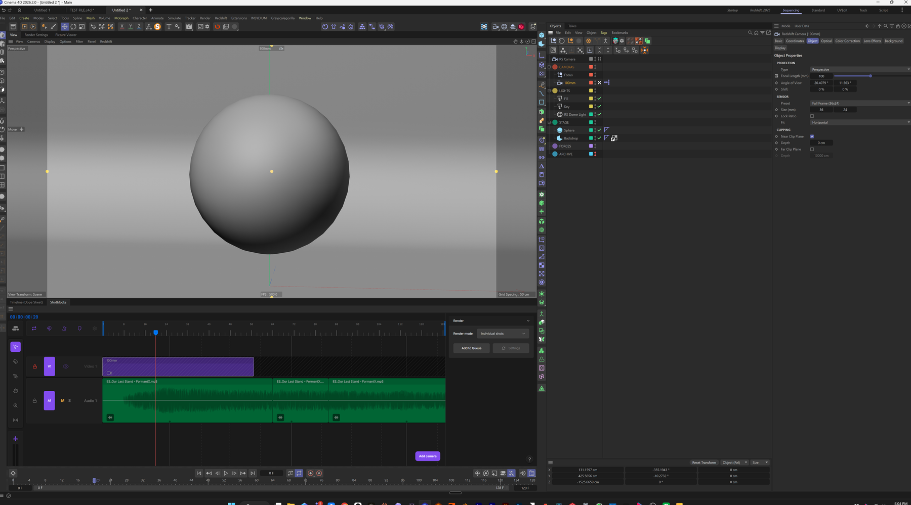
What you can do with it
- Sequence cameras on a multi-track timeline with hard cuts, trims, roll edits, and ripple.
- Create cameras in place from the current viewport, or drag existing ones in from the Object Manager.
- Work to music — import audio, see the waveform, read a live dB meter, detect beats, and snap your cuts to them.
- Render the sequence as a whole through C4D's normal render paths, or push individual shots to the Render Queue.
- Add procedural motion to any camera with the Shotblocks rig tag — spring smoothing, look-at, handheld noise, and zoom.
Installation
Shotblocks installs as a single plugin folder — no installer to run. The download is one zip containing both platforms:
Shotblocks <version>/Windows/shotblocks/ and Shotblocks <version>/MacOS/shotblocks/
Windows
- Unzip the download and open the
Windowsfolder inside. - Copy the whole
shotblocksfolder into your Cinema 4D 2026pluginsdirectory. The usual location is:%APPDATA%\Maxon\Maxon Cinema 4D 2026_<id>\plugins\
(the<id>suffix is unique to your install — paste%APPDATA%\Maxoninto Explorer's address bar and open theMaxon Cinema 4D 2026_…folder, thenplugins\). - Restart Cinema 4D.
macOS
- Unzip the download and open the
MacOSfolder inside. - Copy the whole
shotblocksfolder into your Cinema 4D 2026pluginsdirectory. The usual location is:~/Library/Preferences/Maxon/Maxon Cinema 4D 2026_<id>/plugins/
(in Finder: Go → Go to Folder… and paste~/Library/Preferences/Maxon, then open theMaxon Cinema 4D 2026_…folder andplugins). - Restart Cinema 4D.
Confirming it loaded
Open Extensions → Console in Cinema 4D. You should see a load line confirming the Shotblocks camera rig tag registered, and the timeline plugin's own load line. If the plugin doesn't appear, see Troubleshooting.
Uninstalling
Delete the shotblocks folder from your plugins directory. Your work is safe — Shotblocks stores its timeline data inside each .c4d document, not in the plugin folder, so removing the plugin loses nothing.
First-time workflow
Here's the fastest path from a fresh scene to a playable sequence.
- Open the timeline. From the menu, choose Extensions → Shotblocks. The Shotblocks panel opens; dock it wherever you like — it behaves like any other C4D window.
- Add your first camera. On an empty timeline you'll see a prompt to drop a camera. You have two options:
- Frame up your shot in the viewport, then click Add Camera — Shotblocks creates a camera matching your current view and drops a shot at the playhead.
- Or drag an existing camera from the Object Manager onto the timeline.
- Add more shots. Repeat — each camera becomes a block. Drag blocks to arrange them; drag their edges to set where each cut lands.
- Scrub. Drag in the ruler at the top. The viewport follows the playhead, switching cameras at each cut.
- Play. Press Space to play the sequence. Press it again to stop.
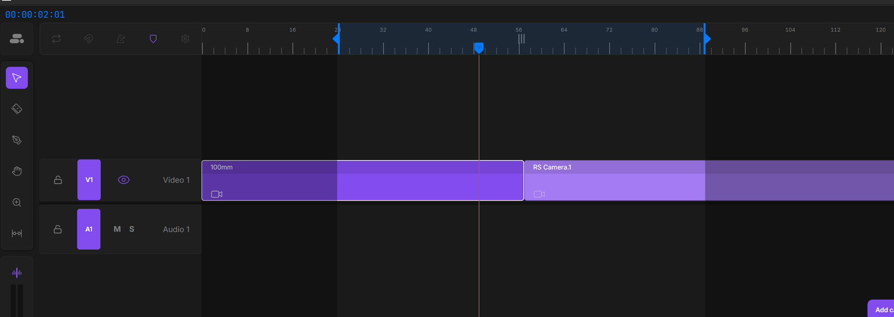
.c4d document automatically — there's no separate Shotblocks file to manage. Just save your scene as normal.
Layout overview
The Shotblocks window has a few regions:
- Timecode — top bar, shows the current playhead frame.
- Utility strip — the row of toggle icons above the ruler: Loop, Snap, Beat Detection, Markers, and Settings.
- Ruler — the frame scale across the top. Drag in it to scrub. The play-range handles live at its edges.
- Tool rail — the left column. The tool palette (Select, Razor, Pen, Hand, Zoom, Slip) sits at the top; the dB meter and audio-scrub toggle sit below it.
- Track headers — the labels down the left of the tracks, with each track's controls.
- The stage — the main area where your shot blocks and audio waveforms live, with the playhead running through it.
- Inspector — the panel on the right. In v1 it holds the render settings. The ? button at its bottom-right opens this manual.
Video tracks grow upward from the center; audio tracks grow downward, with a thin divider line between them — the same arrangement as Premiere, Final Cut, and Resolve.
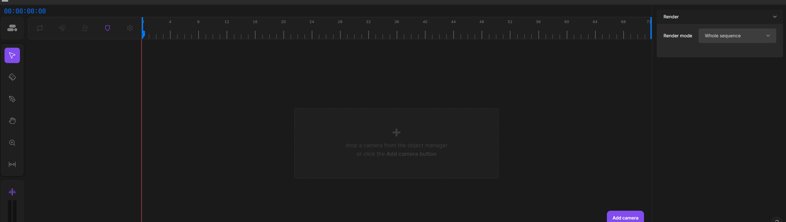
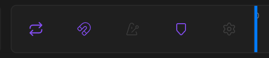
Tracks & headers
There are two kinds of track: video tracks (V1, V2, …) hold camera shots, and audio tracks (A1, A2, …) hold sound. You always have at least V1 and A1.
Adding and removing tracks
You don't add tracks from a menu — you make them by dragging. Drag a shot past the outermost track on its side and a new track appears to hold it. To remove tracks, right-click a track header and choose Delete Track or Delete Empty Tracks. Tracks renumber themselves afterward.
Track header controls
Each header has a chip showing the track name (V1, A2, …). The chip is also the write target: the active chip (highlighted) is where the Add Camera button and Paste put new clips. Click a chip to make it active. Double-click a track's name to rename it.
- Video tracks have an eye toggle — turn it off and that track's cameras won't route to the viewport (useful for parking alternate takes above your main edit).
- Audio tracks have mute and solo. Mute silences a track; solo isolates it (if any track is soloed, only soloed tracks are heard).
- Both have a lock. A locked track ignores all edits — its clips can't be moved, trimmed, or deleted until you unlock it.
When two video shots cover the same frame on different tracks, the one on the higher track wins — top track is what you see, exactly like NLE convention.
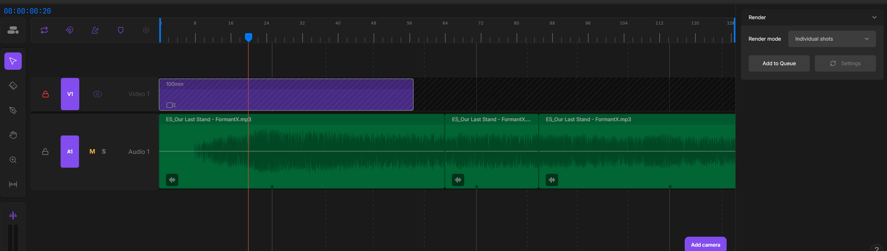
Adding cameras
A shot is just a reference to a camera over a frame range. There are two ways to create one.
Drag from the Object Manager
Drag any camera from the Object Manager onto a video track. Drop it where you want it — it becomes a shot at the cursor's frame. If the camera already has animation (keyframes or a spline), Shotblocks reads that animation's frame range and sizes the shot to fit.
The Add Camera button
Frame up your shot in the viewport, then click Add Camera (it appears as an empty-state prompt, and as a persistent button near the Inspector). Shotblocks:
- Creates a new camera matching your current editor view — same position, rotation, and lens — so the shot looks exactly like what you're seeing.
- Drops a shot for it at the playhead, on the active video chip's track. If the playhead sits inside an existing shot, the new shot is placed in the nearest open space.
- Makes it the live camera and selects it in the Object Manager.
One press of Ctrl+Z removes the shot; a second press removes the camera too.
Which camera type gets created
The Add Camera button creates whatever camera type you've chosen in Settings → Defaults. Only camera types whose renderer is installed in your C4D session are offered — for example, the Redshift camera only appears if Redshift is present.
The active chip (write target)
Each side (video and audio) has one active chip, shown highlighted in the track headers. It's the target for "cursorless" inserts — the Add Camera button and Paste both put their clip on the active chip's track. Dragging from the Object Manager ignores the chip and drops wherever your cursor is.
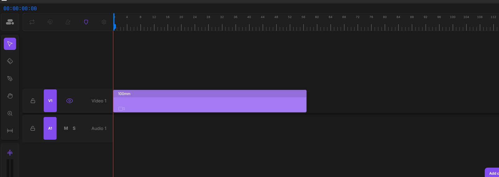
Orphan cameras
If you delete a camera that one or more shots still reference, those shots don't vanish — they become orphans. An orphan shot turns red with a crossed-out camera icon, so you can see at a glance that its source is gone. An orphan can't play back; the viewport holds whatever camera was last live.
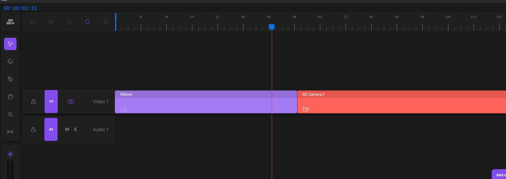
You have three ways to resolve an orphan:
- Undo the deletion — Ctrl+Z brings the camera back and reattaches the shot.
- Relink to another camera — drag a different camera from the Object Manager onto the orphan shot. It adopts the new camera while keeping its position and length.
- Remove the shot — right-click it and delete it.
Move, trim, roll
Editing follows the standard non-linear editor model. Where you grab a clip decides what you do — the cursor changes shape to tell you which edit is under your pointer.
Move
Drag a clip's body to slide it. Horizontal drag changes its position in time; drag it up or down to move it to another track. Drag past the outermost track to spawn a new one.
Trim
Grab a clip's left or right edge and drag to change where that cut lands — the clip gets longer or shorter, the opposite edge stays put. (Audio clips trim against the underlying media: you can only extend as far as there's sound to reveal.) Trimming a camera shot changes only the clip's window — the camera's keyframes stay exactly where they are, so trimming reveals or hides more of the existing animation rather than stretching it.
Retime
Hold Alt+Ctrl and drag a camera shot's edge to retime it: instead of revealing more animation, the camera's keyframes are rescaled to fit the clip's new length, so the whole move plays faster or slower in the same number of moves. The edge you don't drag stays anchored. One undo reverts both the resize and the rescale together.
Roll
Where two clips meet edge-to-edge, the seam is divided into three zones. Hover near the left clip to trim its right edge; near the right clip to trim its left edge; right in the middle to roll — both edges move together, so the cut shifts without leaving a gap. The cursor switches to a roll arrow in the middle zone.
What happens when clips overlap
On the same track, dropping or dragging a clip into space that's already occupied replaces — the moved clip wins, trimming or removing whatever it lands on. Hold Shift while dragging to ripple instead: the neighbors slide out of the way to make room. Across different tracks, overlap is fine — the higher track simply wins at that frame.
Nudging
With clips selected, the arrow keys nudge them: ←/→ by one frame, Shift+arrow by ten. The bracket keys snap clips to the playhead — see the Keyboard reference.
Keyframe dots
A camera shot shows its camera's keyframes as small marks along a thin line across the clip — a glance at where the motion happens. Each mark is a column: every keyframe at that frame, across the camera and any of its tags, collapses into one. Keys outside the clip's window aren't drawn, so trimming a shot shorter shows fewer of them.
The dots are editable directly from the timeline:
- Select — click a dot to select that column. Shift-click adds or removes columns from the selection.
- Marquee — hold Alt and drag a box across one or more clips to rubber-band every dot it covers (the box is blue so it reads over the purple shots). Shift+Alt adds to the current selection.
- Move — drag a selected dot left or right to shift those keyframes to a new frame. The whole selection moves together, snapped to whole frames and kept inside the clip.
- Delete — with dots selected, press Delete to remove those keyframe columns from the camera.
Every dot edit flows through Cinema 4D's undo, so Ctrl+Z reverts it. To edit individual channels or tangents, use Cinema 4D's own dope sheet — the dots are a fast overview and bulk-move tool, not a replacement for it.
The tools
Six tools live in the left rail. Each has a one-key shortcut; the tool stays active until you pick another (Premiere-style).
| Tool | Key | What it does |
|---|---|---|
| Select | V | The default. Move, trim, and roll clips; select and marquee. |
| Razor | B | Click an audio clip to split it at that point. (Video shots are already hard cuts, so the razor applies to audio.) |
| Pen | P | Draw and edit the volume curve on audio clips. See Playback & metering. |
| Hand | H | Drag to pan, same as a middle-drag. |
| Zoom | Z | Drag to zoom, same as Alt+Right-drag. |
| Slip | S | Drag inside a clip to slide its contents under it without moving the clip itself. On an audio clip it slides the sound (handy for re-aligning to a beat); on a camera shot it slides the whole keyframe animation, so you can reposition the move in time in one drag. |
Selection & clipboard
Click a clip to select it. Shift-click (or Ctrl-click) to add or remove clips from the selection. Drag a box across empty timeline space to marquee-select everything it touches.
Selected clips move together as a group, and the standard clipboard works:
| Action | Shortcut |
|---|---|
| Cut | Ctrl+X |
| Copy | Ctrl+C |
| Paste | Ctrl+V |
| Delete | Delete or Backspace |
Paste drops onto the active chip's track at the playhead. You can also right-click a clip for these actions plus Set Play Range to Selection (Ctrl+/ — works with one clip or many) and Lock/Unlock (Ctrl+L). A locked clip can't be moved, trimmed, retimed, or split until unlocked (a clip on a locked track is likewise frozen); it's shown dimmed under a dark overlay. You can still select a locked clip to unlock it.
Snapping
Snapping pulls a clip you're dragging toward nearby edit points so cuts line up cleanly. Turn it on with the Snap button in the utility strip (or press N). When on, a dragged clip magnetizes to:
- the edges of other clips, on any track;
- the playhead;
- camera keyframe dots, on any visible shot;
- detected beats (when the beat grid is visible);
- markers (when markers are visible).
A yellow line appears wherever the clip is snapping. Dragging the playhead snaps too, so you can park it exactly on a keyframe or a beat. If you prefer snap off by default, leave the toggle off and hold Shift during a drag to snap just for that move.
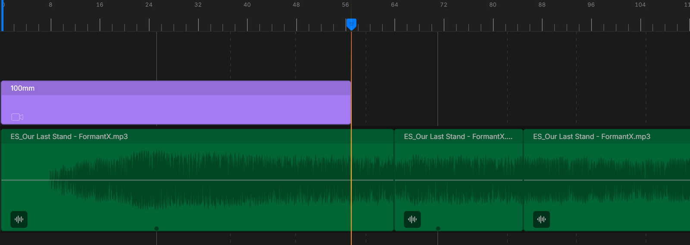
Importing audio
Drag a .wav or .mp3 file from Windows Explorer onto an audio track. Shotblocks reads it, lays down a clip, and draws the waveform.
Waveforms
Each audio clip shows its waveform, which stays crisp as you zoom in and out. The waveform is cached in the document, so it redraws instantly on reload without re-analyzing the file. You can hide a clip's waveform with the small toggle at its lower-left corner.
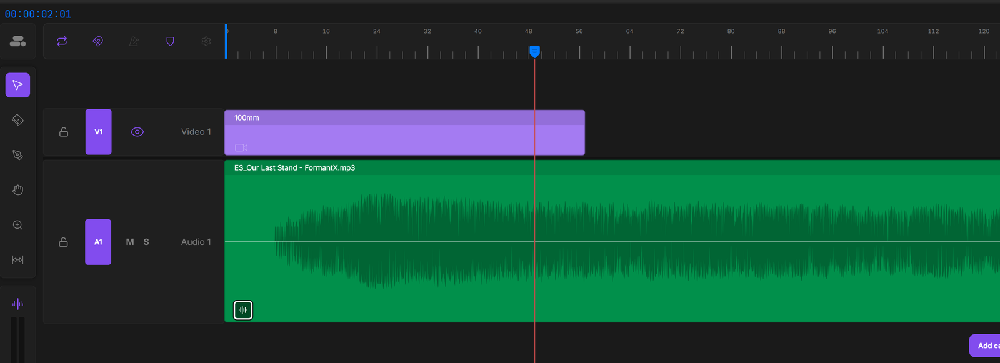
Playback & metering
Audio plays along with the sequence when you press Space, and follows your scrubbing.
Audio scrubbing
The audio-scrub toggle (the skim icon at the top of the dB-meter card in the left rail) makes the timeline play short blips of sound as you drag the playhead — useful for finding an exact moment. Turn it off for silent scrubbing.
The dB meter
The dB meter in the left rail shows the live output level — two bars for left and right — both during playback and while you scrub. It's a quick read on whether your mix is hot or quiet.
Mute and solo
Use the mute and solo controls in each audio track's header to silence or isolate tracks. If any track is soloed, you'll only hear soloed tracks.
Volume curves (the Pen tool)
Switch to the Pen tool (P, or hold Alt) and click on an audio clip to add level keyframes — points on a volume curve drawn across the clip. Drag a point to change its level or position. Right-click a point for its easing (Linear, Hold, Ease In, Ease Out, Ease In-Out) or to delete it. The curve rides with the audio, so trimming, slipping, or splitting the clip keeps your fades intact.
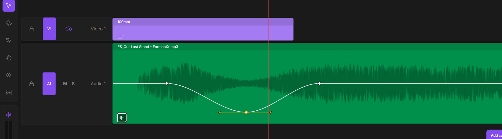
Beat detection
Click the Beat Detection button in the utility strip and Shotblocks analyzes your audio, then overlays a tempo grid on the timeline showing the song's structure — bars, beats, and the larger section boundaries.
- The first click runs the analysis and shows the grid.
- Later clicks just toggle the grid on and off — the analysis is kept, so re-showing it is instant.
With the grid visible, dragged clips snap to beats (as long as Snap is on), so you can land your cuts right on the music. The grid is drawn in quiet white lines so it reads as structure, not as a competing feature on top of your clips.
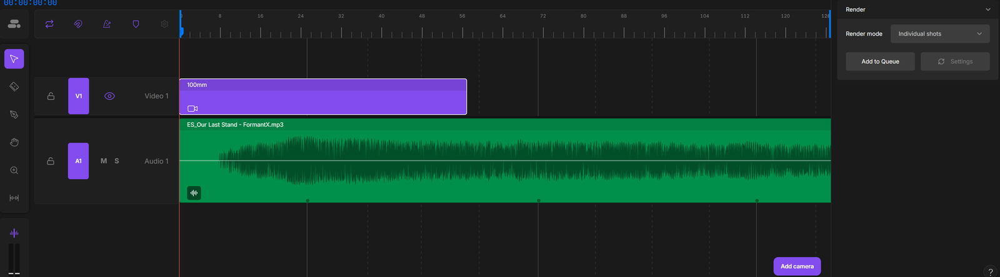
Play, loop, scrub
Space plays and stops. Playback uses Cinema 4D's own transport, so simulations, Alembic caches, and everything else play exactly as they do natively — the viewport just follows your camera cuts as it goes.
Scrub by dragging in the ruler. The playhead and viewport follow in real time, switching cameras at each cut.
Loop
The Loop toggle in the utility strip (or Shift+L) makes playback wrap around within the play range instead of stopping at the end. It stays in sync with C4D's own loop button, so toggling either one updates both.
Working in C4D's native timeline
You can scrub or play from C4D's own timeline too, and the Shotblocks playhead stays in sync. By default the timeline's audio only plays while you're working in Shotblocks; the Audio follows C4D timeline setting lets the audio play during native C4D scrub and playback as well.
Play range
The play range is an in/out region that bounds playback. It's always visible as a bar at the top of the timeline, with a chevron handle at each end. The range affects playback only — clips outside it are dimmed but stay fully editable, and you can scrub anywhere.
Setting the range
- Drag either chevron handle to move the in or out point.
- Drag the bar between them to slide the whole range, keeping its length.
| Hotkey | Action |
|---|---|
| I | Set the in point to the playhead. |
| O | Set the out point to the playhead. |
| / | Reset the range to the whole timeline. |
| ? (Shift+/) | Set the range to the current selection (or all clips if nothing is selected). |
| Ctrl+/ | Set the range to the selected clip(s). Also on the clip right-click menu. |
Markers
Markers are reference pins on the ruler — handy for tagging a moment to cut on. Press M to drop one at the playhead. Markers persist with your scene, and clips snap to them when Snap and marker visibility are both on.
- Show/hide all markers with the Markers toggle in the utility strip (or Shift+M).
- Delete one by right-clicking it on the ruler.
- Delete all by right-clicking empty ruler space and choosing Delete All Markers.
Render workflow
The Inspector's Render section has a mode dropdown with two ways to render your sequence.
Whole sequence
Render the entire edit as one continuous movie, with the cameras cutting at your shot boundaries — through Cinema 4D's normal Render to Picture Viewer. You don't even need the Shotblocks window open: the camera switching is baked into a hidden helper that activates automatically whenever a render runs. Just render as you normally would; your master render settings (renderer, resolution, output path, frame range) are used as-is.
Individual shots
Render each shot as its own file. Click Add to Queue and Shotblocks adds one entry per shot to Cinema 4D's Render Queue, each set to its own camera and frame range. Shotblocks does not start the render — open C4D's Render Queue and fire it when you're ready. Each entry inherits your master render settings, so whatever renderer you've set (Standard, Redshift, Octane, …) is what every shot uses.
The Settings button next to Add to Queue lights up when your master render settings have changed since you last queued. Click it to push the updated settings to the queued shots so they stay in sync.
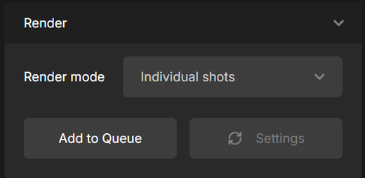
Settings
Open Settings from the gear icon in the utility strip.
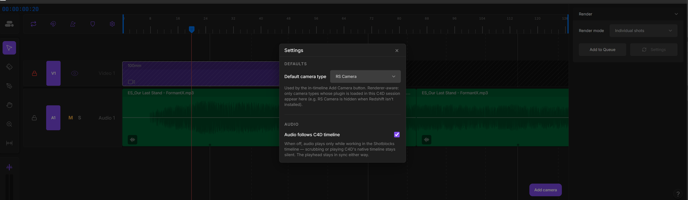
Defaults
Default camera type — the kind of camera the Add Camera button creates. Only types whose renderer is installed appear in the list (so RS Camera shows only when Redshift is present, and so on).
Audio
Audio follows C4D timeline — when off (the default), the timeline's audio plays only while you're working inside Shotblocks; scrubbing or playing C4D's native timeline stays silent. Turn it on to hear audio during native C4D playback too. Either way, the playhead stays in sync.
Camera rig tag
Shots play back whatever animation a camera already has. To add procedural motion — physical smoothing, automatic aiming, handheld feel — apply the Shotblocks tag to a camera: right-click the camera in the Object Manager and choose Tags → Shotblocks. Its controls appear in the Attribute Manager.
The tag is additive: it layers on top of the camera's existing animation rather than replacing it. Turn the tag off and your original animation is untouched. The controls are grouped:
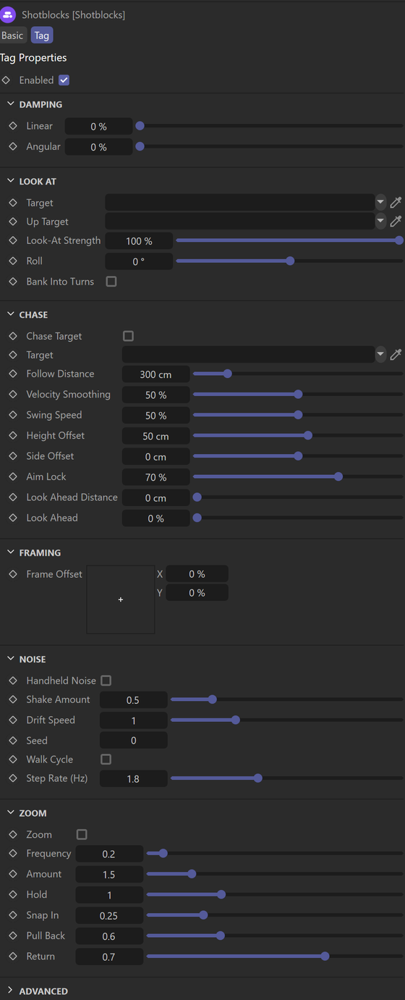
- Damping — turn on Enable Damping to add physical smoothing, then dial Linear (position) and Angular (rotation) as percentages. Damping adds weight and momentum, so the camera eases into moves and settles instead of snapping. It's off by default: with it off the camera stays fully interactive — you can navigate the viewport and drag the camera freely, and any aiming you've set updates live. Turn damping on when you want that weighted, lagging feel.
- Look At — aim the camera at a target object. The aim is live: it tracks the target whether you're playing, scrubbing, or stopped — and as you move the camera by hand — just like Cinema 4D's own Target tag. Look-At Strength blends between the camera's own aim and the target. Aim Lock keeps the aim glued to the target even when Angular damping is high (0% lets the aim lag with the body for a heavy whip-pan; 100% stays locked). Plus Roll and Bank Into Turns.
- Framing — the joystick offsets the aim to compose the subject off-center. It reaches out to ±300%, so you can keyframe it to swing a target from off-screen into frame as a pan. (At the extremes the joystick pad is coarse — type or keyframe the values for precise placement.)
- Noise — Handheld Noise for an organic operator feel: Shake Amount, Drift Speed, a Walk Cycle with step rate, and a Seed to vary the pattern.
- Zoom — punch-in moves: Frequency, Amount, Hold, Snap In, Pull Back, and Return.
- Chase — make the camera pursue a moving target object with its own momentum, trailing and overshooting like a real operator following the action: Follow Distance, Velocity Smoothing, Swing Speed, height/side offsets, and an optional aim-lead.
Keyboard reference
Every shortcut has a mouse equivalent — keys are accelerators, never the only way to do something.
Playback & range
| Key | Action |
|---|---|
| Space | Play / stop |
| I | Set play-range in point to the playhead |
| O | Set play-range out point to the playhead |
| / | Reset play range to the whole timeline |
| ? | Set play range to the selection (or all clips) |
| Ctrl+/ | Set play range to the selected clip(s) |
| Shift+L | Toggle Loop |
Tools
| Key | Tool |
|---|---|
| V | Select |
| B | Razor |
| P | Pen |
| H | Hand |
| Z | Zoom |
| S | Slip |
| Shift+Z | Zoom out to fit the whole timeline |
Editing
| Key | Action |
|---|---|
| Ctrl+Z | Undo |
| Ctrl+Shift+Z / Ctrl+Y | Redo |
| Ctrl+X / C / V | Cut / Copy / Paste |
| Delete / Backspace | Delete selection |
| ← / → | Nudge selection 1 frame (Shift = 10) |
| [ / ] | Move selected clip so its start / end lands on the playhead |
| Alt+[ / Alt+] | Trim selected clip's in / out edge to the playhead |
| Ctrl+L | Lock / unlock the selected clip(s) |
| Delete / Backspace | With keyframe dots selected, remove those keyframe columns |
Some edits are mouse-with-modifier rather than a single key:
| Gesture | Action |
|---|---|
| Shift+drag | Ripple instead of replace (push neighbors aside); also force-enables snap for the drag |
| Alt+Ctrl+edge-drag | Retime a camera shot — rescale its keyframes to the new length |
| Alt+drag on a shot | Marquee-select keyframe dots (Shift+Alt = add) |
Markers & toggles
| Key | Action |
|---|---|
| M | Drop a marker at the playhead |
| Shift+M | Show / hide markers |
| N | Toggle Snap |
Saving & loading
Everything Shotblocks builds lives inside your .c4d document — shots, tracks, markers, play range, volume curves, render mode, and even the imported audio's bytes and waveforms. There's no sidecar file. Save your scene as usual and it all comes back when you reopen it.
Your work auto-saves into the document as you go, so you rarely need to think about it. Undo and redo (Ctrl+Z / Ctrl+Y) flow through Cinema 4D's normal undo stack, covering timeline edits alongside the rest of your scene.
Troubleshooting
The timeline audio is silent
Open the Windows Volume Mixer and look for a "Microsoft Edge WebView2" entry — the timeline plays through it. Make sure it isn't muted or turned down. This is by far the most common cause of silent playback.
Undo (Ctrl+Z) doesn't seem to work in the timeline
It does — Shotblocks forwards undo and redo to Cinema 4D's main undo stack. If a click didn't register, make sure the Shotblocks panel has focus (click in it once) and try again.
macOS: "Apple could not verify shotblocks.xlib is free of malware"
macOS quarantines files downloaded from the internet. If your build of Shotblocks isn't yet code-signed, open Terminal and run this once against your installed plugin folder (adjust the path to your install):
xattr -dr com.apple.quarantine ~/Library/Preferences/Maxon/Maxon\ Cinema\ 4D\ 2026_*/plugins/shotblocks
Then restart Cinema 4D. This clears the quarantine flag from the whole plugin folder. (Signed-and-notarized releases skip this step entirely.)
The plugin didn't load
Open Extensions → Console and look for the Shotblocks load lines. If they're missing, confirm the shotblocks folder is in your Cinema 4D 2026 plugins directory (see Installation) and that you restarted C4D after installing.
A scene won't open
To rule the plugin in or out, try opening the scene on a machine (or session) without Shotblocks installed. If it opens fine there, the issue is plugin-related — let us know what you were doing when it broke.
A shot turned red and won't play
Its camera was deleted — it's an orphan. See Orphan cameras for how to undo, relink, or remove it.
Release notes
v1.2.0
- macOS support — Shotblocks now runs natively on Apple Silicon Macs in Cinema 4D 2026, with the full timeline, camera rig, audio, and rendering feature set.
- Simpler installation — the Windows installer is retired; one zip now carries both platforms, and installing is dropping the
shotblocksfolder into your C4Dpluginsdirectory (see Installation).
v1.1.0
A feature + polish release on top of v1.0.0:
- Keyframe dots, editable — camera keyframes show as marks on a connector line across each shot; select, marquee, drag, delete, and snap edits to them; slip the whole animation under a fixed clip; Alt+Ctrl-drag an edge to retime.
- Dope-sheet sync — selecting a shot highlights that camera's keys in C4D's Timeline / dope sheet, and clears them when you deselect.
- Clip lock that holds — a locked clip (Ctrl+L or the right-click menu) can't be moved, trimmed, retimed, or split until unlocked, and is shown dimmed under a dark overlay.
- New shortcuts & menu — Set Range to Selection (Ctrl+/, one clip or many) on the clip menu; Shift+Z zooms out to the whole timeline.
- Smoother transport — clicking the ruler during playback restarts cleanly from the clicked frame; the Shotblocks playhead stays in sync with C4D.
- Camera rig fixes — Frame Offset works reliably (including with damping on and with more than one rig tag in the scene); each tag keeps its own state.
- Refreshed branding — new app, installer, plugin, and manual icons.
v1.0.0
The first Shotblocks release: a complete, polished camera-sequencing timeline for Cinema 4D 2026 on Windows. It includes:
- The timeline — multi-track shot sequencing with hard cuts; move, trim, roll, ripple, retime, and slip (on audio and camera shots); replace/ripple overlap handling; top-track-wins resolution.
- Keyframe editing from the timeline — camera keyframes show as marks on each shot; select, marquee, drag, and delete them, snap edits to them, slip the whole animation, or Alt+Ctrl-drag an edge to retime — all without leaving the timeline.
- Cameras — drag from the Object Manager or create in place with Add Camera (inherits your viewport view and lens); per-side active chips; selection follows the playhead; orphan detection and relink when a camera is deleted.
- Audio — drag-in WAV/MP3, zoom-adaptive waveforms, a live stereo dB meter, audio scrubbing, per-track mute/solo, pen-tool volume curves, and automatic beat detection with a snap-to-beat grid.
- Playback & range — native-transport playback, loop, a draggable play range with I/O hotkeys, markers, and an "audio follows C4D timeline" option.
- Rendering — whole-sequence rendering through C4D's normal render paths (no dialog needed), or per-shot entries pushed to the Render Queue with settings sync.
- The camera rig tag — optional procedural motion: damping, look-at, framing, handheld noise, zoom, and chase-a-target.
- This manual — opened any time from the ? button in the Inspector.